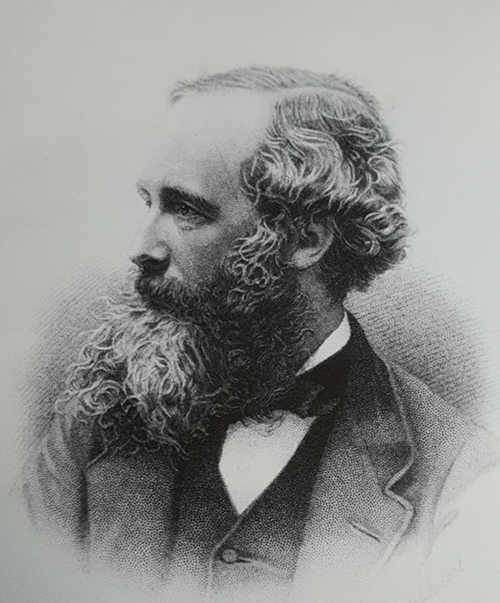

전자기파
맥스웰 - 전자기학의 기초를 확립하다. 전자기파가 공간으로 물결처럼 퍼질수 있음을 주장, 전자기파가 곧 빛임을 이론화
맥스웰 방정식(Maxwell’s equations)은 전자기 현상의 모든 면을 통합적으로 기술하고 있는 전자기학의 기초 공식

1885년 독일의 물리학자 헤르츠(Heinrich Rudolf Hertz, 1857~1894)가 전기진동에 의해 발생하는 전자기파의 존재를 확인했으며 이것이 반사, 굴절, 편이 등에서 완전히 빛과 동일한 성질을 갖고 있다는 것을 실증했습니다. 맥스웰의 ‘전자기장’의 실재가 실험적으로 확인된 것입니다.

그런데 A 장의 전달속도가 유한하므로 매우 짧은 순간 동안 B는 A가 움직였다는 사실을 느끼지 못할 것입니다. 따라서 우리는 일시적이나마 뉴턴의 제3법칙(작용 반작용 법칙)을 위배하는 전기력을 발견하게 될 것입니다.
혁명적 천재 아인슈타인을 낳은 상상, '빛과 함께 달리면 빛은 어떻게 보일까?'

그런데 장의 속성과 전자기파(빛)의 행동은 뉴턴역학으로 설명되지 않았습니다. 전자기학과 뉴턴역학이 화해할 수 없다면 어떤 것을 버려야 할까요? 물리학계가 심각한 혼돈에 빠져들었습니다.
이 같은 혼돈의 세계에 질서를 부여한 것이 바로 특수상대성이론입니다. 특수상대성이론은 장의 개념을 탐구하는 과정에서, 다시 말하면 전자기학과 뉴턴역학을 융합시키는 과정에서 탄생했습니다.
이쯤 되면, ‘서양철학은 플라톤의 주석’이라는 말이 있듯이, ‘현대 물리학은 아인슈타인의 주석’이라 해도 지나친 말은 아닐 듯 합니다.

플랫폼의 시간과 전차 안의 시간이 달랐던 것입니다. 아인슈타인은 시간과 공간의 개념을 새롭게 검토하기 시작했습니다. 특수상대성이론의 정수에 마침내 다가선 것입니다.
아인슈타인이 시간의 새로운 개념과 관련해 불현듯 깨달은 사실은 바로 ‘두 사건이 동시에 일어났다’고 말할 수 있는 것은 관찰자 자신이 몸담고 있는 공간에서만 가능하다는 것입니다. 이로써 시간은 모든 공간에서 일정하게 흐르는 게 아니라는 혁명적인 사실이 드러나게 됩니다.